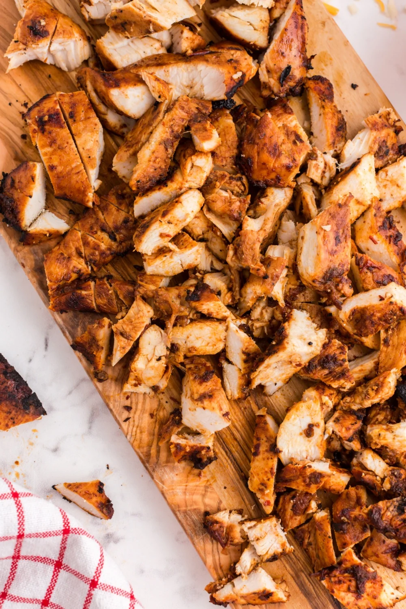

Chipotle Chicken Recipe

Description:
Prepare your taste buds for a tantalizing journey with our sizzling Chipotle Chicken – a smoky, spicy, and utterly delicious culinary adventure!
We start with a blend of authentic dried chipotle and ancho chile peppers, carefully rehydrated to unleash their fiery essence. The dried chilies are transformed into a mouthwatering paste using half a cup of water, blending their smoky heat and rich flavors into a symphony of taste that will leave you craving more.
Into this fiery concoction, we add chunks of vibrant red onion and pungent cloves of garlic. These aromatic ingredients infuse the marinade with a hint of sweetness and an irresistible depth of flavor.
Next, our secret combination of sea salt, ground cumin, dried oregano, and freshly ground black pepper join the party. These handpicked spices elevate the marinade to an unparalleled level, ensuring each bite is a burst of bold and harmonious notes.
With precision, we drizzle luscious olive oil into the mix, transforming the fiery blend into a velvety, smooth marinade that will cling lovingly to the succulent chicken thighs.
Speaking of which, we only use the finest, skinless, boneless chicken thighs. Tender and juicy, these thighs are the perfect canvas for our signature chipotle marinade. They eagerly absorb the flavors, promising a taste experience that will make your taste buds dance with delight.
Now comes the crucial step – marinating the chicken thighs in this flavor-packed blend. We allow the chicken to bathe in the chipotle-infused goodness, allowing the flavors to penetrate every fiber, resulting in a chicken that's bursting with taste from the inside out.
Once the marination process is complete, we expertly grill the chipotle-infused chicken thighs to perfection. The sizzle of the grill brings out the smoky essence of the chilies, infusing the chicken with an enticing aroma that will have your senses tingling with anticipation.
The result is a plate of Chipotle Chicken that's an explosion of flavors – smoky, spicy, and oh-so-satisfying. Each tender bite is a harmonious balance of heat and succulence, leaving you with a euphoric culinary experience that you'll want to relive again and again.
Whether you're a spice lover or seeking a taste adventure, our Chipotle Chicken is sure to ignite your taste buds and leave you yearning for another rendezvous with this tantalizing delight. Get ready to embark on a flavor-packed journey you won't soon forget!
Ingredients:
- 1 ounce dried chipotle chile pepper
- 1 ounce dried ancho chile pepper
- ½ cup water
- ½ red onion, cut into small chunks
- 4 cloves garlic
- 2 teaspoons sea salt
- 1 teaspoon ground cumin
- 1 teaspoon dried oregano
- 1 teaspoon freshly ground black pepper
- 2 tablespoons olive oil
- 2 ½ pounds skinless, boneless chicken thighs
Directions:
- Place chipotle and ancho chile peppers in a shallow bowl; pour in water. Cover the bowl and let sit at room temperature until peppers are softened, 10 to 12 hours. Drain water and remove seeds from peppers.
- Blend chile peppers, red onion, garlic, sea salt, cumin, oregano, and black pepper in a blender until a coarse paste forms; add olive oil and blend until marinade is smooth.
- Place chicken thighs between 2 sheets of heavy plastic on a solid, level surface. Firmly pound chicken with the smooth side of a meat mallet to a 1/2-inch thickness.
- Place chicken in a resealable plastic bag and add marinade. Turn chicken several times to coat. Seal bag and marinate in the refrigerator for at least 8 hours.
- Preheat an indoor grill with top and bottom plates for medium-high heat.
- Remove chicken from the bag and discard marinade.
- Place chicken on the preheated grill, close the lid, and cook until no longer pink in the center and the juices run clear, 5 to 7 minutes. An instant-read thermometer inserted into the center should read at least 165 degrees F (74 degrees C). Cut chicken into strips and serve warm.